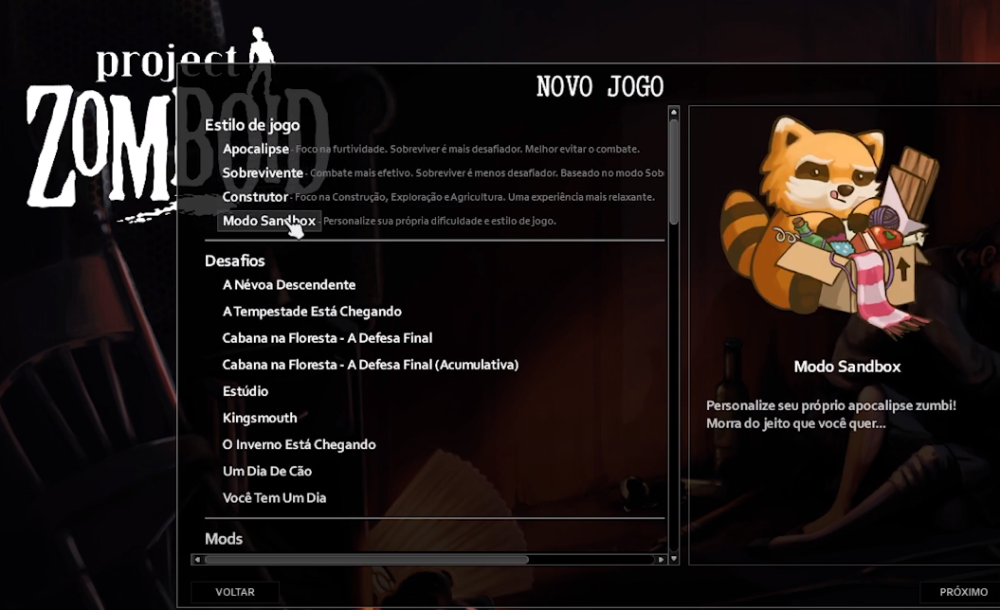
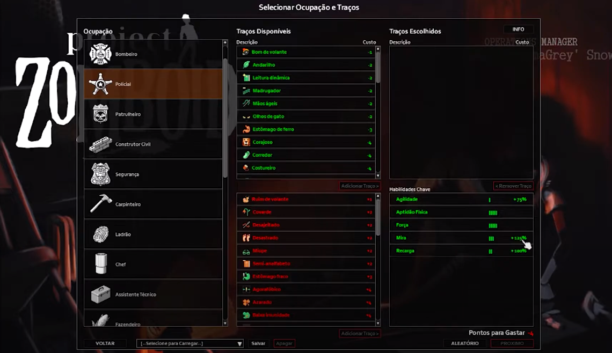
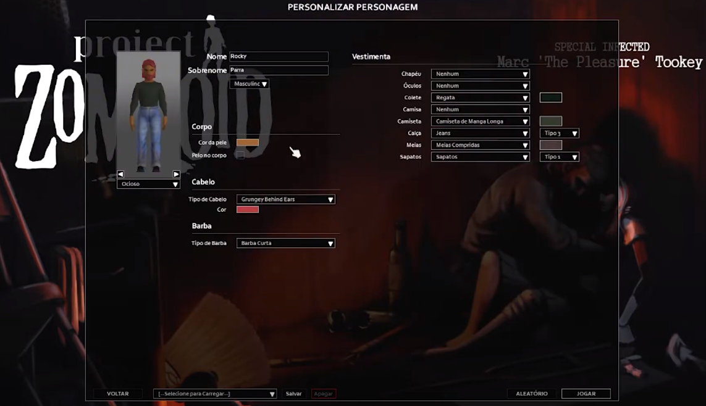

Criando Personagem
Criar um personagem no Project Zomboid é uma parte importante do jogo, pois define suas vantagens e desvantagens na sobrevivência. Cada escolha tem suas consequências, e você deve pensar bem no que quer priorizar: força, inteligência, agilidade, resistência, sorte ou equilíbrio. Não existe uma fórmula certa ou errada para criar um personagem, mas sim uma que se adapte ao seu estilo de jogo e às suas preferências.
Para criar um personagem no Project Zomboid, você precisa seguir alguns passos:
- Escolher o modo de jogo. Existem quatro modos principais: Sobrevivência, Construtor, Desafio e Personalizado. Cada um tem suas próprias regras, dificuldades e objetivos. 
- Escolher a ocupação. A ocupação define o que seu personagem fazia antes do surto de zumbis, e influencia suas habilidades iniciais, pontos de atributos e itens. Por exemplo, um bombeiro tem mais resistência ao fogo e começa com um machado, enquanto um professor tem mais facilidade para ler livros e aprender novas habilidades. Tambem temos os traços são características que afetam o comportamento, a personalidade e as capacidades do seu personagem. Eles podem ser positivos ou negativos, e custam ou dão pontos de atributos. Por exemplo, um personagem atlético tem mais força e aptidão física, mas custa 10 pontos de atributos, enquanto um personagem míope tem dificuldade para enxergar à distância, mas ganha 2 pontos de atributos. 
- Personalizar a aparência. Você pode mudar o nome, o sexo, a cor da pele, o cabelo, a barba, as roupas e os acessórios do seu personagem. Você pode deixar o personagem como você, ou como alguém que você admira ou se identifica. Você pode usar sua criatividade e imaginação para criar um personagem único e original. 
Lembre-se de nunca se apegar ao seu personagem, pois foi assim que ele morreu.